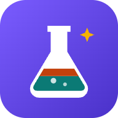

Labo Pro Gutenberg
Ateliers numériques et mode jeu de la filière professionnelle
Bac Pro ASSP
Accompagnement, soins et services à la personne
Petite enfance de 0 à 3 ans
Bac Pro AEPA
Animation – enfance et personnes âgées
Besoins des publics, projet d’animation, sécurité
👩🏫 Espace enseignant : suivez la progression de vos élèves à partir de leurs codes de sauvegarde.
Tableau de bord de la classe →